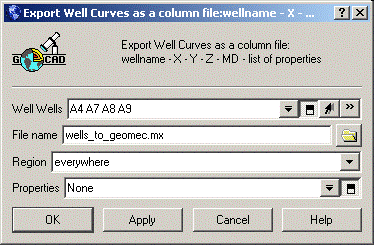

The GoCad format allows the user to import:
Every GoCad file (except Wellpaths) starts with the keyword GOCAD and ends with the keyword END. It is possible to have multiple GoCad definitions in one file by defining multiple GOCAD-END sections. The GoCad file type follows the GOCAD keyword. This could be TSurf for a surface definition and TSolid for volume definition.
The header section starts with keyword HEADER and the header itself is contained between { }. Geomec ignores most of the keywords in the header except the name keyword. This name is used in Geomec. Note that the GOCAD keyword and the END keyword is not used in well path files.
The comment tags of the GoCad format are “#” and the “*” character.
Example:
GOCAD
# This is a comment
The GoCad file can contain properties assigned to the points of the GoCad structure. The properties must be declared after the header block and before the first point data line as:
PROPERTIES Pname1 Pname2 …
PROPERTY_CLASSES class_name1 class_name2… (Optional)
UNITS unit1 unit2 … (Optional)
NO_DATA_VALUES v1 v2
ESIZES esize1 esize2
The PROPERTIES line lists all the properties that will be attached to the point. The ordering of the properties on the line corresponds to the ordering of the properties values associated to the point definition.
The PROPERTY_CLASSES line lists the property class names of each property defined in the PROPERTIES list. If one property class must be listed then all property classes must be listed.
The NO_DATA_VALUES line lists the no-data values for each of the property defined in the property list. For vectorial properties, there is only one no-data value and each property vector element should be equal to the value if it is to be treated as a no data value vectorial property.
The UNITS line lists the units for each of the property defined in the property list.
The ESIZES line lists the dimension of each property defined in the property list. By default the dimension of a property is 1, but for example a property representing a 3D vector will be of dimension 3. For example if you have a set of points with a 1 dimensional property Cohesion and a 3D Displacement the definition of the properties on one point will look like:
PROPERTIES Cohesion Displacement
ESIZE 1 3
PVRTX 1 X Y Z porosity_displacement_x displacement_y displacement_z
The vertices in GoCad are defined by
VRTX ID X Y Z
or when properties are attached
PVRTX ID X Y Z P1 P2 …
Surfaces are defined by keyword TSurf after the GOCAD keyword. Surface files are defined by a list of indexed vertices and a list of triangles using three indices of the vertices.
TRGL id1 id2 id3
Example:
GOCAD TSurf
HEADER {
name:Top
}
TFACE
VRTX 0 0 0 0
VRTX 1 100 0 0
VRTX 2 100 100 0
VRTX 3 0 100 0
TRGL 0 1 2
TRGL 0 2 3
END
Solids are defined by the keyword TSolid after the GOCAD keyword. Solid files are defined by a list of indexed vertices and a list of tetrahedrons using four indices of the vertices
TETRA id1 id2 id3 id4
Geomec also supports an additional format for importing solids as a mesh. The definition of a tetrahedron is followed by a comment starting with #CTETRA like
TETRA 1 2 3 4
#CTETRA region +(boundary)side1 +side2–-side3–-side4
where
region region (i.e. geological formation) tetrahedral element resides in.
+(boundary)side1 name of surface object that the face described by nodes 2,3,4 lies on. If this face is internal to the region, the word “"non”" would appear. The “"”" means that thee trahedra lie on the side of the surface object denoted by the right handed normal. A “"“" means it lies on the side denoted by the left handed normal. The “"(boundar”" part of the key word indicates that at least one edge of this face lies on the boundary of the surface object it is associated with.
+side2 same as +(boundary)side1 except the face is described by nodes 3,4,1.
-side3 same as +(boundary)side1 except the face is described by nodes 4,1,2.
-side4 same as +(boundary)side1 except the face is described by nodes 1,2,3.Geomec reads GoCad well files which are exported using the GoCad functionality "Export to" \ "Well Path and logs ASCII". The user can select multiple (or all) wells. Ensure that the export file has a *.mx extension so that it is understood by Geomec.
The export file contains a header line starting with the word WELLPATH and then supplies 5 data columns with Wellname, Easting (X), Northing (Y), Depth (Z) and Measured Depth (MD) containing the multiple wells.

When the name in the first column changes Geomec supposes that a new well begins so the user is allowed to import multiple wells in the same file.
Example:
| WELLNAME |
X |
Y |
Z |
MD |
| wWEKLL | 617128.518066 | 6322872.73706 | 3467.05102539 | 0 |
| wWEKLL | 617223.093994 | 6322540.18701 | 4329.8828125 | 929.523 |
| wWEKLL | 616853 | 6321590 | 5219.93994141 | 2283.05 |
| wWEKLL | 617291.451172 | 6321853.354 | 6357.04345703 | 3529.88 |
| wWEKLL | 617407.304688 | 6321491.08777 | 7272.21777344 | 4520.94 |
| wWEKLL | 617477.534424 | 6321122.37878 | 8295.71484375 | 5611.09 |
When exporting to GoCad, the user is advised to Export Mesh Result (for instance Depth) on the required Wells as a DAT file.
In GoCad the "Import from " \ "Column-based file" under the wells section can be used to import the well data by selecting the appropriate sections of the column.